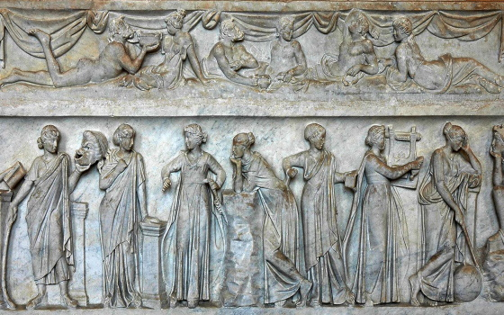
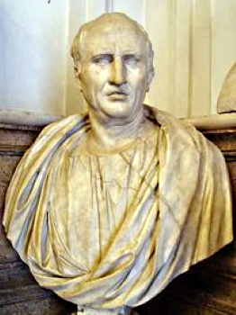
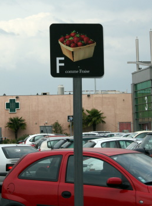
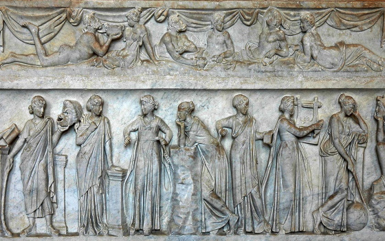
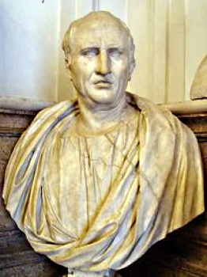
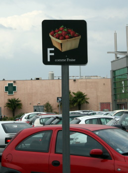

La mémoire est une faculté cognitive majeure dans le développement d’un être vivant. Pour un animal, la mémoire et les
souvenirs lui permettent de se raccrocher à ce qu’il connaît pour évaluer une situation qui se présente à lui.
Pour l’être humain, la mémoire et le souvenir de ses expériences l’aident à se définir en tant que personne.
Mais dans notre culture, la mémoire représente bien plus que ça. Dans l’imaginaire collectif, elle est gage de connaissances, de culture, parfois même d’intelligence, et est étroitement liée à l’histoire et à l’identité culturelle.
S’ils n’ont fait leur réapparition que très récemment, la mémoire et les arts de la mémoire ont leur importance dès le début de l’Antiquité.
Pour un animal, la mémoire et lesLes mythes, faisant partie intégrante des civilisations anciennes, sont souvent bien plus que de simples histoires : Ils sont révélateurs des mœurs et valeurs des communautés qui les racontent et sont emplis de significations.
Depuis Hésiode particulièrement, poète grec du VIIIᵉ siècle avant J.-C.
Divinité de la mémoire et des souvenirs, elle est souvent représentée la main sous le menton, posture de la méditation.
Elle aurait créé les mots et les langues de la Terre entière, on lui attribue également l’art du raisonnement.


Zeus, roi de l’Olympe, tomba amoureux de Mnémosyne et des innombrables poèmes et chansons dont elle se souvenait et qu’elle lui chantait.
De leur union naquirent, sur le mont Pierius, les neufs Muses, destinées à être l’oubli des malheurs du monde et la trêve des soucis. Ainsi, chacune étant attribuée à un domaine de connaissance et à un art, elles protégeaient les arts et assuraient l’ordre du monde (en opposition au chaos).
Ce mythe nous révèle une chose importante, à travers les attributs de Mnémosyne et sa descendance : La mémoire est associée à la création et la connaissance. Mnémosyne n’est pas juste la personnification de la mémoire et des souvenirs, elle a créé les mots grâce à ses connaissances.

De même, ses filles, les Muses, ne symbolisent pas simplement “un art”, mais un “domaine de connaissance”. La mémoire n’est pas synonyme de mémoire “par coeur”, sans réflexion et automatique.Non, pour les Grecs, la mémoire engendre la connaissance.
Muse
Signification
Art/Domaine de connaissance
Καλλιόπη - Calliope
"Qui a une belle voix"
éloquence, poésie épique
Κλειώ - Clio
"Qui est célèbre"
épopée, histoire
Ἐρατώ - Érato
"L'aimable"
élégie, poésie lyrique et chorale
Εὐτέρπη - Euterpe
"La toute réjouissante"
musique
Μελπομένη - Melpomène
"La chanteuse"
chant et tragédie
Πολύμνια - Polymnie
"Celle qui dit de nombreux hymnes"
chants nuptiaux, funéraires, rhétorique
Τερψιχόρη - Terpsichore
"Celle qui charme le chœur"
danse, chant choral
Θάλεια - Thalie
"La florissante, l'abondante"
poésie pastorale, comédie
Οὐρανία - Uranie
"La céleste"
astrologie, astronomie
La mémoire est identifiée à la pensée, au savoir artistique et scientifique, à la vivacité d’esprit et à la richesse culturelle.
Ainsi, ces facultés étant particulièrement glorifiées, c’est tout naturellement que les humains se sont attelés à les améliorer encore et encore, afin d’élargir leurs connaissances. C’est ainsi que petit à petit, l’art de la mémoire fit son apparition, mettant en œuvre tout un tas de procédés pour faire travailler ses facultés cognitives.
Travailler sa mémoire grâce aux arts de la mémoire était le moyen parfait pour les orateurs pour prononcer de longs discours avec une précision et une pertinence à toute épreuve.

Les premiers grands fondements des arts de la mémoire, tels qu’ils sont décrits par Cicéron, viennent à nouveau d’une origine presque mythique :
D’après Simonide, poète grec, celui-ci était invité à un festin. Lorsqu’il sortit, appelé par des dieux, la villa s’écroula, enfouissant les convives. Simonide fut appelé pour identifier ces derniers, et en imaginant les personnes à leur place dans la salle de banquet, il les retrouva tous très facilement.

Cette histoire inspira fortement Cicéron, qui put alors définir la première méthode de l’histoire de l’art de la mémoire : le loci, consistant à imprimer dans la mémoire une série de lieux et localisations pour se souvenir d’autres choses. Dans cette technique, les lieux sont des “images-moyens mnémotechniques” pour mémoriser un discours, à l’inverse, un lieu porte en lui “de la mémoire” puisqu’on l’associe à des notions ou souvenirs dont nous voulons nous rappeler. Cela souligne aussi l’importance du sens de la vue dans cette pratique, considérée comme le plus fort des sens.
C’est ainsi que la première technique des arts de la mémoire est née, avant de se développer grandement à travers les lieux et les époques.
La maîtrise des arts de la mémoire, auparavant gage de grandeur intellectuelle, est aujourd’hui associée à (voire renommée) la “mnémotechnique”. Moins reconnue et encensée qu’aux temps anciens, elle est pourtant utilisée par le commun de mortels :
Qui n’a jamais entendu ces comptines pour apprendre l’alphabet, le corps humain, ou ces phrases pour se souvenir de sa grammaire (“Mais où et donc or ni car ?”).

Les étudiants utilisent ce genre de technique pour améliorer leur mémorisation et leurs performances, mais les arts de la mémoire ont aussi beaucoup servi aux grands penseurs et artistes de notre Histoire :
Après les orateurs de l’Antiquité, une utilisation flagrante des arts de la mémoire se retrouve dans l'œuvre Cena Cypriani, réalisée autour du IVème siècle (les historiens ne s’accordant pas sur la date exacte). Cena Cypriani, raconte un récit fictif prenant place lors d’un dîner auquel les personnages de la Bible sont conviés. Les personnages bibliques interviennent tout au long du récit avec les particularités qui les caractérisent, permettant ainsi de se rappeler plus facilement d’eux et de leur importance dans la Bible. Malgré l’intention parodique de cette œuvre, son utilisation des moyens mnémotechniques rappelle celle des grands principes antiques, notamment la méthode des lieux (loci); et sa pertinence n’est plus à démontrer.
Dans un domaine plus scientifique, au XVIe siècle, l’astronome et mathématicien français Pierre Hérigone développe une technique aujourd’hui fédératrice du “code chiffres-sons”. Cette méthode, consistant à associer des sons ou des mots à des chiffres pour les retenir plus aisément, a été redéveloppée par Aimé Paris, plus proche de nos contemporains, au XIXe siècle.
Aujourd’hui, ce système est remis au goût du jour par des challengers ou vidéastes vulgarisateurs avides de connaissances, qui se plaisent à apprendre les 60 premières décimales de Pi ou à retenir l’exacte altitude des plus hauts monts de la planète. Ce qui n’était réservé qu’à l’élite se démocratise à notre époque. Et ce qui n’était autrefois qu’un moyen d’élargir son domaine de connaissances et d’améliorer sa capacité de mémorisation, en devient aujourd’hui un jeu et un plaisir personnel.

Une question se pose aujourd’hui : Comment les arts de la mémoire influencent-ils encore la période contemporaine, et notamment dans le numérique ?
À travers les articles de ce site, vous découvrirez les possibilités infinies que nous offrent les arts de la mémoire et de nombreuses utilisations de ceux-ci : Théâtre, littérature shakespearienne, peinture, cinéma, mémoire des données en ligne ou encore jeux-vidéos, la richesse des arts de la mémoire est sans limite.
Vous apprendrez comment de multiples pratiques et professions contemporaines s’articulent autour des arts de la mémoire, et comment la technologie les sublime d’autant plus.
Le palais mental par exemple, appréhendé notamment dans la célèbre série Sherlock (2010), se retrouve dans énormément d’aspects du jeu vidéo. On peut alors se demander si le Serious game représente une nouvelle méthode d’apprentissage, remettant en question le système scolaire occidental actuel. Plus spécifiquement, nous pourrons également analyser des œuvres en particulier, Assassin’s Creed par exemple, où nous nous demanderons alors quelles sont les limites et les dangers de la mémoire génétique dans cette franchise, du scénario in game aux scènes du film adapté. Mais demandons nous aussi, quel est le lien entre le palais mental et les mécaniques du jeu vidéo ? Quels sont les symboles du palais mental utilisés et comment passe-t-on de l’abstraction du palais mental à sa visualisation dans les jeux-vidéos ? Comment s’articule la mémoire des niveaux à travers les Hub worlds en utilisant le palais mental ? Quelles nouvelles possibilités le numérique apporte-t-il aux arts de la mémoire ? Autant de questions et de réflexions que d’articles y répondant à travers ce site !
Et en parlant de numérique, nous pouvons le voir se mêler aux arts de la mémoire dans bien d’autres domaines que celui des jeux-vidéos. Plus généralement, on peut se poser la question de la culture et de la mémoire numérique dans la science-fiction moderne, incluant ainsi les jeux-vidéos, mais aussi les films, les enregistrements et les romans. Ainsi, nous traiterons du rapport à la mémoire et à la “culture externalisée”. Qui dit numérique dit également traitement des informations, posant la question du développement des techniques d’enregistrement des données, et donc de la mémoire numérique; ainsi que la modification de nos usages et de nos méthodes d’apprentissage due à ces changements.
Nous nous pencherons également sur les arts de la mémoire et ses déclinaisons dans une utilisation plus logique et pragmatique. Notamment, nous chercherons à déceler comment les mind maps utilisent les principes fondamentaux des arts de la mémoire et du palais mental pour en créer quelque chose de nouveau. Mais nous pourrons également nous pencher davantage sur l’aspect mathématique de la chose, et nous demander comment les arts de la mémoire aident les mathématiciens à développer leur créativité pour trouver des solutions, via la théorie des graphes.
L’information ne passant pas seulement par la vue dans le numérique, nous aborderons les informations perceptibles via d’autres sens, tel que l’ouïe, où nous observerons de plus près la synesthésie et la matérialisation du son en art numérique. En conséquence, nous pourrons alors nous pencher sur la question de la perception et de la création, toutes deux liées à la mémoire, et ainsi déterminer comment la synesthésie et la mémoire influent sur la création artistique à l’heure du digital.
La question de la perception implique une analyse plus poussée du fonctionnement de notre cerveau en ce qui concerne la mémoire. En effet, nous pourrons alors nous demander ce qu’est une perception à proprement parler, quelles mémoires implicites peut-elle engendrer, et quel est l’impact de l’altération des perceptions et du conditionnement sur notre mémoire. Plus encore, l’utilisation de la mémoire et des arts de la mémoire n’étant pas toujours volontaires, nous pouvons voir leurs effets également dans nos rêves. C’est comme cela que l’article “la mémoire, clé des rêves” aborde l’étroit lien entre la mémoire et les rêves, se demandant si la mémoire joue un rôle dans tout cela, et s’ils sont créés à partir de nos souvenirs. Cet article explorera cet univers notamment à travers le film Inception, référence cinématographique incontournable.
Christian Nolan n’est évidemment pas le seul artiste, réalisateur ou penseur mentionné et analysé dans ces articles. Les arts de la mémoire se dispensant dans tous les domaines et tous les milieux, nous aurons également l’occasion de découvrir le travail de David Lynch. À travers son œuvre, nous explorerons la théorie comme quoi la mémoire est peut-être plus que la simple somme des événements vécus par l’individu, et qu’elle porterait un appendice artificiel, une prothèse qui l’augmente. Nous verrons alors comment l'œuvre du célèbre réalisateur prévient des dangers de cette mémoire prothétique sur notre culture. Enfin, d’un point de vue plus classique, mais non moins contemporain, nous explorerons également le travail de Shakespeare, grand auteur anglo-saxon, et nous intéresserons à l’art de la mémoire dans la littérature à travers ses œuvres.
Pour résumer, le site que vous consultez actuellement est empli de réflexions, d’analyses et de points de vue divers et variés au sujet des arts de la mémoire et de leur application dans le monde contemporain. Qu’il s’agisse de littérature, de jeux vidéos, de cinématographie, de mathématiques ou de capacités cognitives, les arts de la mémoire se retrouvent partout, et nos articles vous plongeront dans cet univers. Les articles et les notions se croisent, se divisent, s’entrecoupent, témoignant de la richesse des cultures développées par les humains, mais aussi de la richesse des arts de la mémoire en eux-mêmes.
Du fin fond de l’Antiquité au monde moderne, les arts de la mémoire vous feront naviguer à travers les arts et les temps. Et à l’ère du numérique où leurs possibilités d’application sont décuplées, vous n’êtes pas prêts d’arrêter de voyager.
Bonne lecture.
Sources
Pour l’être humain, la mémoire et le souvenir de ses expériences l’aident à se définir en tant que personne.
Mais dans notre culture, la mémoire représente bien plus que ça. Dans l’imaginaire collectif, elle est gage de connaissances, de culture, parfois même d’intelligence, et est étroitement liée à l’histoire et à l’identité culturelle.
S’ils n’ont fait leur réapparition que très récemment, la mémoire et les arts de la mémoire ont leur importance dès le début de l’Antiquité.
La mémoire : Une faculté déifiée
La mémoire est une faculté cognitive majeure dans le développement d’un être vivant.Pour un animal, la mémoire et lesLes mythes, faisant partie intégrante des civilisations anciennes, sont souvent bien plus que de simples histoires : Ils sont révélateurs des mœurs et valeurs des communautés qui les racontent et sont emplis de significations.
Depuis Hésiode particulièrement, poète grec du VIIIᵉ siècle avant J.-C.
Une divinité grecque : Mnémosyne
Comme l’a décrit Hésiode, poète grec du VIIIᵉ siècle avant J.-C, dans son ouvrage La Théogonie, Mnémosyne (Μνημοσύνη / Mnêmosúnê) est une titanide, fille de Gaïa (terre) et Ouranos (Ciel).Divinité de la mémoire et des souvenirs, elle est souvent représentée la main sous le menton, posture de la méditation.
Elle aurait créé les mots et les langues de la Terre entière, on lui attribue également l’art du raisonnement.
Zeus, roi de l’Olympe, tomba amoureux de Mnémosyne et des innombrables poèmes et chansons dont elle se souvenait et qu’elle lui chantait.
De leur union naquirent, sur le mont Pierius, les neufs Muses, destinées à être l’oubli des malheurs du monde et la trêve des soucis. Ainsi, chacune étant attribuée à un domaine de connaissance et à un art, elles protégeaient les arts et assuraient l’ordre du monde (en opposition au chaos).
Symbolique et signification
Que nous raconte le mythe de Mnémosyne ? Quel est le lien entre ce mythe et la naissance des arts de la mémoire ?Ce mythe nous révèle une chose importante, à travers les attributs de Mnémosyne et sa descendance : La mémoire est associée à la création et la connaissance. Mnémosyne n’est pas juste la personnification de la mémoire et des souvenirs, elle a créé les mots grâce à ses connaissances.

De même, ses filles, les Muses, ne symbolisent pas simplement “un art”, mais un “domaine de connaissance”. La mémoire n’est pas synonyme de mémoire “par coeur”, sans réflexion et automatique.Non, pour les Grecs, la mémoire engendre la connaissance.
La mémoire est identifiée à la pensée, au savoir artistique et scientifique, à la vivacité d’esprit et à la richesse culturelle.
Ainsi, ces facultés étant particulièrement glorifiées, c’est tout naturellement que les humains se sont attelés à les améliorer encore et encore, afin d’élargir leurs connaissances. C’est ainsi que petit à petit, l’art de la mémoire fit son apparition, mettant en œuvre tout un tas de procédés pour faire travailler ses facultés cognitives.
Ars Memoriae : Une origine antique
La première référence connue à l'« art de mémoire », est décrite dans De Oratore par Cicéron. Durant l’Antiquité, la mémoire est considérée comme étant l’une des cinq composantes de la rhétorique (après l’invention, la disposition, l’élocution, et avant l’action). Pratiquée par les sophistes et codifiée par Aristote, c’est en premier lieu l’art de persuader, mais aussi l’art de “bien dire”. À cette époque où les orateurs et les philosophes sont glorifiés, la rhétorique a toute son importance, et par extension, la mémoire également.Travailler sa mémoire grâce aux arts de la mémoire était le moyen parfait pour les orateurs pour prononcer de longs discours avec une précision et une pertinence à toute épreuve.

Les premiers grands fondements des arts de la mémoire, tels qu’ils sont décrits par Cicéron, viennent à nouveau d’une origine presque mythique :
D’après Simonide, poète grec, celui-ci était invité à un festin. Lorsqu’il sortit, appelé par des dieux, la villa s’écroula, enfouissant les convives. Simonide fut appelé pour identifier ces derniers, et en imaginant les personnes à leur place dans la salle de banquet, il les retrouva tous très facilement.
Cette histoire inspira fortement Cicéron, qui put alors définir la première méthode de l’histoire de l’art de la mémoire : le loci, consistant à imprimer dans la mémoire une série de lieux et localisations pour se souvenir d’autres choses. Dans cette technique, les lieux sont des “images-moyens mnémotechniques” pour mémoriser un discours, à l’inverse, un lieu porte en lui “de la mémoire” puisqu’on l’associe à des notions ou souvenirs dont nous voulons nous rappeler. Cela souligne aussi l’importance du sens de la vue dans cette pratique, considérée comme le plus fort des sens.
C’est ainsi que la première technique des arts de la mémoire est née, avant de se développer grandement à travers les lieux et les époques.
De l’Antiquité grecque à nos jours : Un impact à travers les âges
Les Grecs ont inventé les arts de la mémoire qui, de fil en aiguille, ont traversé le monde occidental pour venir s’immiscer dans les plus vastes domaines culturels et intellectuels. Fondés sur les images et les lieux, partant des grands orateurs de l’Antiquité pour arriver aux simples méthodes d’apprentissage dans les écoles, ils ont été utilisés dans tous les domaines sans même que nous nous en rendions compte.La maîtrise des arts de la mémoire, auparavant gage de grandeur intellectuelle, est aujourd’hui associée à (voire renommée) la “mnémotechnique”. Moins reconnue et encensée qu’aux temps anciens, elle est pourtant utilisée par le commun de mortels :
Qui n’a jamais entendu ces comptines pour apprendre l’alphabet, le corps humain, ou ces phrases pour se souvenir de sa grammaire (“Mais où et donc or ni car ?”).

Les étudiants utilisent ce genre de technique pour améliorer leur mémorisation et leurs performances, mais les arts de la mémoire ont aussi beaucoup servi aux grands penseurs et artistes de notre Histoire :
Après les orateurs de l’Antiquité, une utilisation flagrante des arts de la mémoire se retrouve dans l'œuvre Cena Cypriani, réalisée autour du IVème siècle (les historiens ne s’accordant pas sur la date exacte). Cena Cypriani, raconte un récit fictif prenant place lors d’un dîner auquel les personnages de la Bible sont conviés. Les personnages bibliques interviennent tout au long du récit avec les particularités qui les caractérisent, permettant ainsi de se rappeler plus facilement d’eux et de leur importance dans la Bible. Malgré l’intention parodique de cette œuvre, son utilisation des moyens mnémotechniques rappelle celle des grands principes antiques, notamment la méthode des lieux (loci); et sa pertinence n’est plus à démontrer.
Dans un domaine plus scientifique, au XVIe siècle, l’astronome et mathématicien français Pierre Hérigone développe une technique aujourd’hui fédératrice du “code chiffres-sons”. Cette méthode, consistant à associer des sons ou des mots à des chiffres pour les retenir plus aisément, a été redéveloppée par Aimé Paris, plus proche de nos contemporains, au XIXe siècle.
Aujourd’hui, ce système est remis au goût du jour par des challengers ou vidéastes vulgarisateurs avides de connaissances, qui se plaisent à apprendre les 60 premières décimales de Pi ou à retenir l’exacte altitude des plus hauts monts de la planète. Ce qui n’était réservé qu’à l’élite se démocratise à notre époque. Et ce qui n’était autrefois qu’un moyen d’élargir son domaine de connaissances et d’améliorer sa capacité de mémorisation, en devient aujourd’hui un jeu et un plaisir personnel.
Arts de la mémoire et mémoire numérique - Editorial
Ainsi, les origines des arts de la mémoire étant bien lointaines aujourd’hui, ils sont pourtant utilisés dans de nombreux domaines de nos jours. Ils font partie intégrante de notre environnement culturel, allant de la littérature aux innovations technologiques, tout au passant par l’apprentissage personnel.Une question se pose aujourd’hui : Comment les arts de la mémoire influencent-ils encore la période contemporaine, et notamment dans le numérique ?
À travers les articles de ce site, vous découvrirez les possibilités infinies que nous offrent les arts de la mémoire et de nombreuses utilisations de ceux-ci : Théâtre, littérature shakespearienne, peinture, cinéma, mémoire des données en ligne ou encore jeux-vidéos, la richesse des arts de la mémoire est sans limite.
Vous apprendrez comment de multiples pratiques et professions contemporaines s’articulent autour des arts de la mémoire, et comment la technologie les sublime d’autant plus.
Le palais mental par exemple, appréhendé notamment dans la célèbre série Sherlock (2010), se retrouve dans énormément d’aspects du jeu vidéo. On peut alors se demander si le Serious game représente une nouvelle méthode d’apprentissage, remettant en question le système scolaire occidental actuel. Plus spécifiquement, nous pourrons également analyser des œuvres en particulier, Assassin’s Creed par exemple, où nous nous demanderons alors quelles sont les limites et les dangers de la mémoire génétique dans cette franchise, du scénario in game aux scènes du film adapté. Mais demandons nous aussi, quel est le lien entre le palais mental et les mécaniques du jeu vidéo ? Quels sont les symboles du palais mental utilisés et comment passe-t-on de l’abstraction du palais mental à sa visualisation dans les jeux-vidéos ? Comment s’articule la mémoire des niveaux à travers les Hub worlds en utilisant le palais mental ? Quelles nouvelles possibilités le numérique apporte-t-il aux arts de la mémoire ? Autant de questions et de réflexions que d’articles y répondant à travers ce site !
Et en parlant de numérique, nous pouvons le voir se mêler aux arts de la mémoire dans bien d’autres domaines que celui des jeux-vidéos. Plus généralement, on peut se poser la question de la culture et de la mémoire numérique dans la science-fiction moderne, incluant ainsi les jeux-vidéos, mais aussi les films, les enregistrements et les romans. Ainsi, nous traiterons du rapport à la mémoire et à la “culture externalisée”. Qui dit numérique dit également traitement des informations, posant la question du développement des techniques d’enregistrement des données, et donc de la mémoire numérique; ainsi que la modification de nos usages et de nos méthodes d’apprentissage due à ces changements.
Nous nous pencherons également sur les arts de la mémoire et ses déclinaisons dans une utilisation plus logique et pragmatique. Notamment, nous chercherons à déceler comment les mind maps utilisent les principes fondamentaux des arts de la mémoire et du palais mental pour en créer quelque chose de nouveau. Mais nous pourrons également nous pencher davantage sur l’aspect mathématique de la chose, et nous demander comment les arts de la mémoire aident les mathématiciens à développer leur créativité pour trouver des solutions, via la théorie des graphes.
L’information ne passant pas seulement par la vue dans le numérique, nous aborderons les informations perceptibles via d’autres sens, tel que l’ouïe, où nous observerons de plus près la synesthésie et la matérialisation du son en art numérique. En conséquence, nous pourrons alors nous pencher sur la question de la perception et de la création, toutes deux liées à la mémoire, et ainsi déterminer comment la synesthésie et la mémoire influent sur la création artistique à l’heure du digital.
La question de la perception implique une analyse plus poussée du fonctionnement de notre cerveau en ce qui concerne la mémoire. En effet, nous pourrons alors nous demander ce qu’est une perception à proprement parler, quelles mémoires implicites peut-elle engendrer, et quel est l’impact de l’altération des perceptions et du conditionnement sur notre mémoire. Plus encore, l’utilisation de la mémoire et des arts de la mémoire n’étant pas toujours volontaires, nous pouvons voir leurs effets également dans nos rêves. C’est comme cela que l’article “la mémoire, clé des rêves” aborde l’étroit lien entre la mémoire et les rêves, se demandant si la mémoire joue un rôle dans tout cela, et s’ils sont créés à partir de nos souvenirs. Cet article explorera cet univers notamment à travers le film Inception, référence cinématographique incontournable.
Christian Nolan n’est évidemment pas le seul artiste, réalisateur ou penseur mentionné et analysé dans ces articles. Les arts de la mémoire se dispensant dans tous les domaines et tous les milieux, nous aurons également l’occasion de découvrir le travail de David Lynch. À travers son œuvre, nous explorerons la théorie comme quoi la mémoire est peut-être plus que la simple somme des événements vécus par l’individu, et qu’elle porterait un appendice artificiel, une prothèse qui l’augmente. Nous verrons alors comment l'œuvre du célèbre réalisateur prévient des dangers de cette mémoire prothétique sur notre culture. Enfin, d’un point de vue plus classique, mais non moins contemporain, nous explorerons également le travail de Shakespeare, grand auteur anglo-saxon, et nous intéresserons à l’art de la mémoire dans la littérature à travers ses œuvres.
Pour résumer, le site que vous consultez actuellement est empli de réflexions, d’analyses et de points de vue divers et variés au sujet des arts de la mémoire et de leur application dans le monde contemporain. Qu’il s’agisse de littérature, de jeux vidéos, de cinématographie, de mathématiques ou de capacités cognitives, les arts de la mémoire se retrouvent partout, et nos articles vous plongeront dans cet univers. Les articles et les notions se croisent, se divisent, s’entrecoupent, témoignant de la richesse des cultures développées par les humains, mais aussi de la richesse des arts de la mémoire en eux-mêmes.
Du fin fond de l’Antiquité au monde moderne, les arts de la mémoire vous feront naviguer à travers les arts et les temps. Et à l’ère du numérique où leurs possibilités d’application sont décuplées, vous n’êtes pas prêts d’arrêter de voyager.
Bonne lecture.
Sources